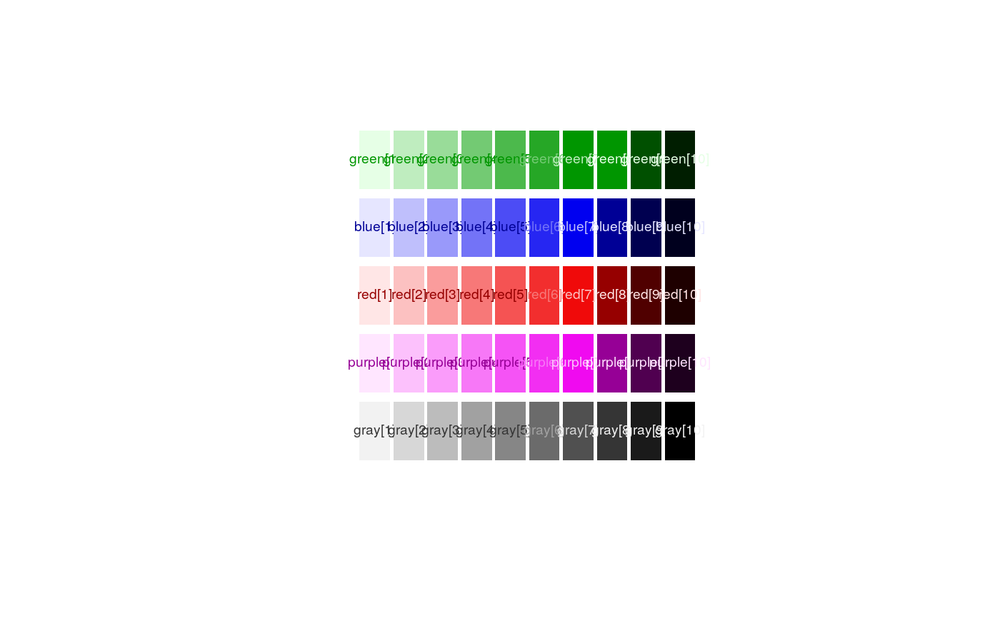
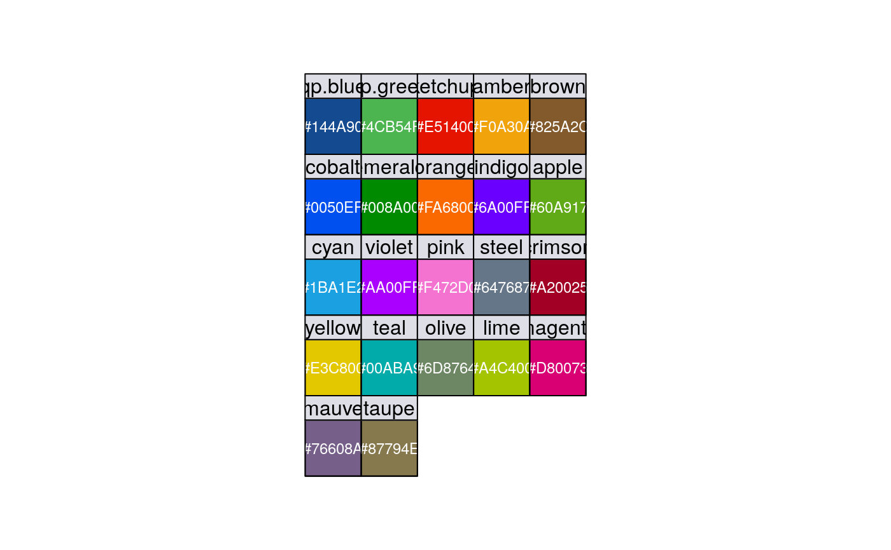

qPharmetra Colors
qp.blue.Rda set of qPharmetra colors to be used for plotting
qp.blue
Format
An object of class character of length 1.
Value
qPharmetra logo colors qp.blue, qp.green, and the following low saturated colors: lime,apple,emerald, cobalt, cyan, cobalt, indigo, violet, pink, magenta, crimson, ketchup, orange,amber,yellow,brown,olive,steel,mauve,taupe.
Notes
Colors are named rgb codes
Examples
## the greens and the blues par(mfrow = c(1,1), pty = 's') nc = length(blue) cols = c(8,8,8,8,8,4,2,1,1,1) plot(1:nc, seq(-0.45,0.3,length=nc), type = 'n', axes = FALSE, xlab ="", ylab = "", xlim = c(0.5, nc + 0.5))for(i in 1:nc) { polygon(c(i-0.45, i+0.45, i+0.45, i-0.45), c(0.16, 0.16, 0.29, 0.29), col = green[i], angle = -1, density = -1, border=0) text(i,0.225,paste("green[",i,"]", sep = ""), cex = 0.6, col = green[cols][i]) polygon(c(i-0.45, i+0.45, i+0.45, i-0.45), c(0.01, 0.01, 0.14, 0.14), col = blue[i], angle = -1, density = -1, border=0) text(i,0.075,paste("blue[",i,"]", sep = ""), cex = 0.6, col = blue[cols][i]) polygon(c(i-0.45, i+0.45, i+0.45, i-0.45), c(-0.01, -0.01, -0.14, -0.14), col = red[i], angle = -1, density = -1, border=0) text(i,-0.075,paste("red[",i,"]", sep = ""), cex = 0.6, col = red[cols][i]) polygon(c(i-0.45, i+0.45, i+0.45, i-0.45), c(-0.16, -0.16, -0.29, -0.29), col = purple[i], angle = -1, density = -1, border=0) text(i,-0.225,paste("purple[",i,"]", sep = ""), cex = 0.6, col = purple[cols][i]) polygon(c(i-0.45, i+0.45, i+0.45, i-0.45), c(-0.31, -0.31, -0.44, -0.44), col = gray[i], angle = -1, density = -1, border=0) text(i,-0.375,paste("gray[",i,"]", sep = ""), cex = 0.6, col = gray[cols][i]) }library(lattice) lapply(list(qp.colors,qp.colors.sorted), function(my.colors) xyplot(yval ~ xval | color , data = expand.grid(xval = 1, yval = 1, color = names(my.colors)) , xlim = c(0,1) , ylim = c(0,1) , as.table = TRUE , panel = function(x,y,...) { panel.rect(xleft = 0, ybottom = 0 , xright = 1, ytop = 1 , col = my.colors[panel.number()] ) ltext(x = 0.5, y = 0.5 , my.colors[panel.number()], col = rgb(0.99,0.99,0.99) , cex = 0.75 ) } , aspect = 1 , par.strip.text = list(cex = 1) , scales = list(y = list(at = NULL), x = list(at = NULL)) , ylab = "" , xlab = "" ) )#> [[1]]#> #> [[2]]#>